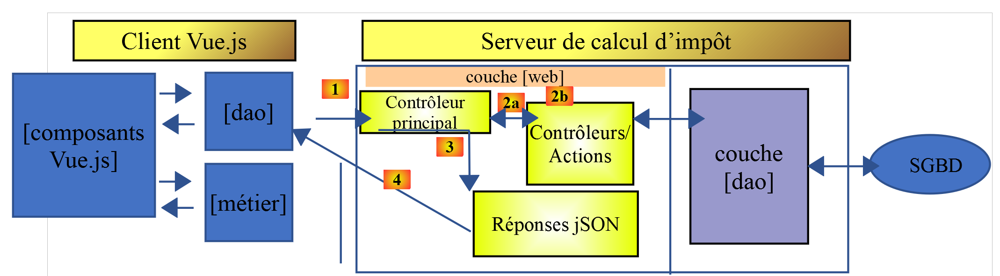
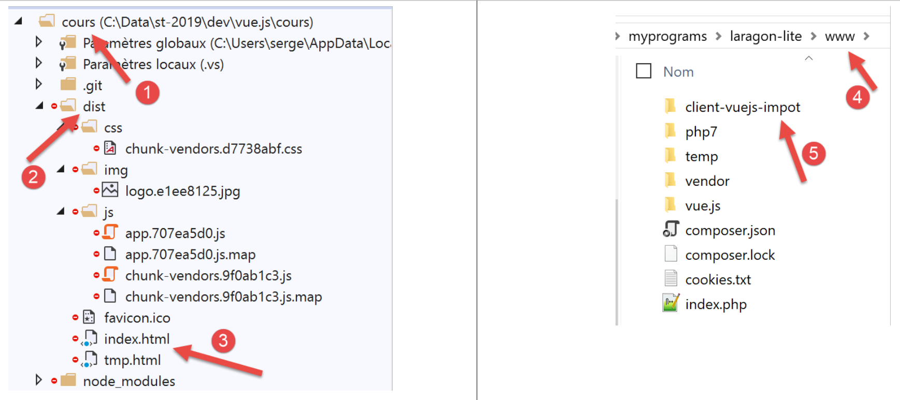
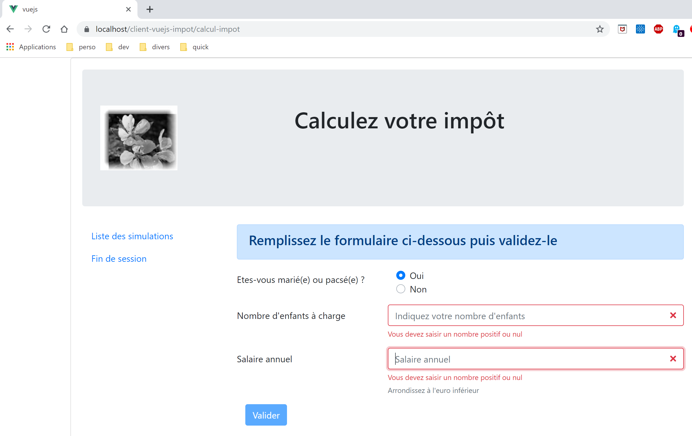

18. Client Vue.js des Steuerberechnungsservers
18.1. Architecture
Wir werden eine Client-Server-Anwendung mit folgender Architektur implementieren:

Der Steuerberechnungsserver entspricht der Version 14, die im Dokument |https://tahe.developpez.com/tutoriels-cours/php7| entwickelt wurde
18.2. Die Ansichten der Anwendung
Die Ansichten der Anwendung [vuejs-10] entsprechen denen der Version 13 des Dokuments |https://tahe.developpez.com/tutoriels-cours/php7| des Steuerberechnungsservers, wenn dieser im Modus HTML verwendet wird. In der vorliegenden Anwendung werden diese Ansichten jedoch vom JavaScript-Client und nicht vom Server PHP generiert.
Die erste Ansicht ist die Authentifizierungsansicht:

Die zweite Ansicht ist die Steuerberechnungsansicht:

Die dritte Ansicht zeigt die Liste der vom Benutzer durchgeführten Simulationen an:

Der obige Bildschirm zeigt, dass die Simulation Nr. 1 gelöscht werden kann. Daraufhin erhält man folgende Ansicht:

Löscht man nun die letzte Simulation, erhält man die folgende neue Ansicht:

18.3. Projektelemente [vuejs-20]
Die Projektstruktur für das Projekt [vuejs-20] sieht wie folgt aus:

Das Projekt umfasst folgende Elemente:
- [assets/logo.jpg]: das Projektlogo;
- [couches]: die Ebenen [métier] und [dao] der Anwendung;
- [plugins]: die Plugins der Anwendung;
- [views]: die Ansichten der Anwendung;
- [config.js]: Konfiguriert die Anwendung;
- [router.js]: Definiert das Routing der Anwendung;
- [store.js]: der Store von [Vuex];
- [main.js]: das Hauptskript der Anwendung;
18.3.1. Die Schichten [métier] und [dao]
18.3.1.1. Die Schicht [dao]
Die Schicht [dao] wird durch die Klasse [Dao] aus dem Abschnitt |vuejs-10| implementiert
18.3.1.2. Die Schicht [métier]
Die Schicht [métier] wird durch die Klasse [Métier] aus dem Dokument |https://tahe.developpez.com/tutoriels-cours/php7| implementiert. Darin wurde die folgende Methode [setTaxAdminData] hinzugefügt:
// Konstruktor
constructor(taxAdmindata) {
// this.taxAdminData: Daten der Steuerbehörde
this.taxAdminData = taxAdmindata;
}
// Setter
setTaxAdminData(taxAdmindata) {
// this.taxAdminData: Daten der Steuerbehörde
this.taxAdminData = taxAdmindata;
}
Die Methode [setTaxAdminData] führt dieselbe Funktion aus wie der Konstruktor. Durch ihre Existenz ist folgende Abfolge möglich:
- die Klasse [Métier] mit einer Anweisung [métier=new Métier()] instanziieren, wenn man die Klasse instanziieren möchte, aber die Daten [taxAdminData] noch nicht hat;
- anschließend die Eigenschaft [taxAdminData] durch eine Operation [métier.setTaxAdminData(taxAdmindata)] zu füllen;
18.3.2. Die Konfigurationsdatei [config]
Die Datei [config.js] lautet wie folgt:
// Verwendung der Bibliothek [axios]
const axios = require('axios');
// Zeitlimit für Anfragen an den QZXW2HTML-Steuerberechnungsserver
axios.defaults.timeout = 2000;
// die Datenbank des Steuerberechnungsservers URL
// Das Schema [https] verursacht Probleme in Firefox, da der Steuerberechnungsserver
// ein selbstsigniertes Zertifikat sendet. Mit Chrome und Edge funktioniert es einwandfrei. Safari wurde nicht getestet.
axios.defaults.baseURL = 'https://localhost/php7/scripts-web/impots/version-14';
// Wir werden Cookies verwenden
axios.defaults.withCredentials = true;
// Konfiguration exportieren
export default {
axios: axios
}
Diese Konfiguration gehört zur Bibliothek [axios], die die Schicht [dao] für ihre Abfragen HTTP verwendet. In Zeile 8 ist zu beachten, dass der Server über den sicheren Port [https] läuft.
18.3.3. Die Plugins
Die Plugins [pluginDao, pluginMétier, pluginConfig] dienen dazu, drei neue Eigenschaften für die Funktion bzw. Klasse [Vue] zu erstellen:
- [$dao]: hat als Wert eine Instanz der Klasse [Dao];
- [$métier]: hat als Wert eine Instanz der Klasse [Métier];
- [$config]: hat als Wert das von der Konfigurationsdatei [config] exportierte Objekt;
[pluginDao]
export default {
install(Vue, dao) {
// Fügt der Vue-Klasse eine Eigenschaft [$dao] hinzu
Object.defineProperty(Vue.prototype, '$dao', {
// Wenn auf Vue.$dao verwiesen wird, wird der zweite Parameter [dao] zurückgegeben
get: () => dao,
})
}
}
[pluginMétier]
export default {
install(Vue, métier) {
// fügt der Klasse „Vue“ die Eigenschaft „[$métier]“ hinzu
Object.defineProperty(Vue.prototype, '$métier', {
// Wenn auf Vue.$métier verwiesen wird, wird der zweite Parameter [métier] zurückgegeben
get: () => métier,
})
}
}
[pluginConfig]
export default {
install(Vue, config) {
// fügt der View-Klasse eine Eigenschaft [$config] hinzu
Object.defineProperty(Vue.prototype, '$config', {
// Wenn auf Vue.$config verwiesen wird, wird der zweite Parameter [config] zurückgegeben
get: () => config,
})
}
}
18.3.4. Die Jalousie [Vuex]
Die Store-Datei „[Vuex]“ wird durch die folgende Datei „[store]“ implementiert:
// Vuex-Plugin
import Vue from 'vue'
import Vuex from 'vuex'
Vue.use(Vuex);
// Vuex-Store
const store = new Vuex.Store({
state: {
// die Tabelle der Simulationen
simulations: [],
// die Nummer der letzten Simulation
idSimulation: 0
},
mutations: {
// Löschen der Zeile mit der Indexnummer
deleteSimulation(state, index) {
// eslint-disable-next-line no-console
console.log("mutation deleteSimulation");
// Die Zeile mit der Nummer [index] wird gelöscht
state.simulations.splice(index, 1);
// eslint-disable-next-line no-console
console.log("store simulations", state.simulations);
},
// Hinzufügen einer Simulation
addSimulation(state, simulation) {
// eslint-disable-next-line no-console
console.log("mutation addSimulation");
// Nummer der Simulation
state.idSimulation++;
simulation.id = state.idSimulation;
// Die Simulation wird zur Simulationsübersicht hinzugefügt
state.simulations.push(simulation);
},
// State bereinigen
clear(state) {
state.simulations = [];
state.idSimulation = 1;
}
}
});
// Export des Objekts [store]
export default store;
Anmerkungen
- Zeilen 2–4: Das Plugin [Vuex] wird in das Framework [Vue] integriert;
- Zeilen 8–13: Wir speichern die folgenden Elemente im Speicher von [Vuex]:
- [simulations]: die Liste der vom Benutzer durchgeführten Simulationen;
- [idSimulation]: die Nummer der letzten vom Benutzer durchgeführten Simulation;
Zur Erinnerung: Der Store wird zwischen den Ansichten geteilt und sein Inhalt ist reaktiv: Wenn er geändert wird, werden die Ansichten, die ihn verwenden, automatisch aktualisiert. In unserer Anwendung muss nur das Element [simulations] reaktiv sein, nicht das Element [idSimulation]. Dieses Element wurde der Einfachheit halber im Store belassen;
- Zeilen 14–40: Die zulässigen Änderungen am Objekt [state] aus den Zeilen 8–13. Zur Erinnerung: Diese erhalten immer das Objekt [state] aus den Zeilen 8–13 als ersten Parameter;
- Zeile 16: Die Mutation [deleteSimulation] ermöglicht das Löschen einer Simulation mit der Nummer [index];
- Zeile 25: Mit der Mutation [addSimulation] kann eine neue Simulation zur Simulationstabelle hinzugefügt werden;
- Zeile 35: Mit der Änderung [clear] wird das Objekt [state] aus den Zeilen 8–13 zurückgesetzt;
18.3.5. Die Routing-Datei [router]
Die Routing-Datei lautet wie folgt:
// Importe
import Vue from 'vue'
import VueRouter from 'vue-router'
// die Ansichten
import Authentification from './views/Authentification'
import CalculImpot from './views/CalculImpot'
import ListeSimulations from './views/ListeSimulations'
// Routing-Plugin
Vue.use(VueRouter)
// Anwendungsrouten
const routes = [
// Authentifizierung
{
path: '/', name: 'authentification', component: Authentification
},
// Steuerberechnung
{
path: '/calcul-impot', name: 'calculImpot', component: CalculImpot
},
// Liste der Simulationen
{
path: '/liste-des-simulations', name: 'listeSimulations', component: ListeSimulations
},
// Sitzung beenden
{
path: '/fin-session', name: 'finSession', component: Authentification
}
]
// der Router
const router = new VueRouter({
// die Routen
routes,
// Anzeigemodus der Routen im Browser
mode: 'history',
})
// Export des Routers
export default router
Anmerkungen
- Zeile 16: Beim Start der Anwendung wird die Ansicht [Authentification] angezeigt, da ihr URL die Wurzel [/] ist;
- Zeile 20: Die Ansicht [CalculImpot] wird angezeigt, wenn die Ansicht URL ([/calcul-impot]) angefordert wird;
- Zeile 24: Die Ansicht [ListeSimulations] wird angezeigt, wenn die Ansicht URL oder [/liste-des-simualtions] angefordert wird;
- Zeile 28: Die Ansicht [Authentification] wird angezeigt, wenn die Ansicht URL [/fin-session] angefordert wird;
- Zeilen 33–38: Ein Objekt [router] wird mit diesen Routen (Zeile 35) und dem Verwaltungsmodus [history] (Zeile 37) für URL angelegt;
- Zeile 41: Dieser Router wird exportiert;
18.3.6. Das Hauptskript [main.js]
Das Skript [main.js] lautet wie folgt:
// Importe
import Vue from 'vue'
// Hauptansicht
import Main from './views/Main.vue'
// Plugin [bootstrap-vue]
import BootstrapVue from 'bootstrap-vue'
Vue.use(BootstrapVue);
// CSS Bootstrap
import 'bootstrap/dist/css/bootstrap.css'
import 'bootstrap-vue/dist/bootstrap-vue.css'
// Router
import router from './router'
// Plugin [config]
import config from './config';
import pluginConfig from './plugins/pluginConfig'
Vue.use(pluginConfig, config)
// Instanzierung der Schicht [dao]
import Dao from './couches/Dao';
const dao = new Dao(config.axios);
// Plugin [dao]
import pluginDao from './plugins/pluginDao'
Vue.use(pluginDao, dao)
// Instanzierung der Schicht [métier]
import Métier from './couches/Métier';
const métier = new Métier();
// Plugin [métier]
import pluginMétier from './plugins/pluginMétier'
Vue.use(pluginMétier, métier)
// Vuex-Store
import store from './store'
// Start der App „UI“
new Vue({
el: '#App',
// den Router
router: router,
// die Vuex-Jalousie
store: store,
// die Hauptansicht
render: h => h(Main),
})
Beachten Sie folgende Punkte:
- Zeilen 18–21: Das vom Skript [./config] exportierte Objekt wird im Attribut [Vue.$config] verfügbar sein und steht somit allen Ansichten der Anwendung zur Verfügung. Dies war hier nicht erforderlich, da das Objekt [config] nur vom Skript [main] (Zeile 25) verwendet wird. Dennoch ist es häufig der Fall, dass die Konfiguration für mehrere Ansichten erforderlich ist. Daher wollten wir hier an dem Prinzip festhalten, sie in einem Attribut der Ansicht verfügbar zu machen;
- Zeilen 24–25: Instanziierung der Schicht [dao]. Die Klasse [Dao] wird in Zeile 24 importiert und anschließend in Zeile 25 instanziiert. Ihr Konstruktor akzeptiert als einzigen Parameter das Objekt [axios], eine Konfigurationseigenschaft;
- Zeilen 27–29: Die Schicht [dao] wird im Attribut [$dao] aller Ansichten verfügbar gemacht;
- Zeilen 31–37: Die gleiche Sequenz wird für die Ebene [métier] wiederholt. Der Konstruktor der Klasse [Métier] hat als Parameter [taxAdminData], der die Daten der Steuerbehörde darstellt. Diese Daten liegen uns noch nicht vor. Das Objekt [métier] aus Zeile 33 muss daher zu einem späteren Zeitpunkt vervollständigt werden;
- Zeile 40: Der Store [Vuex] wird importiert;
- Zeilen 43–51: Die Hauptansicht [Main] (Zeilen 5 und 50) wird instanziiert, wobei ihr zwei Parameter übergeben werden:
- Zeile 46: Der Router [router], definiert in Zeile 16;
- Zeile 48: Die Store-Komponente [Vuex] [store], definiert in Zeile 40;
- In beiden Fällen steht der Name der Eigenschaft links und ihr Wert rechts. Die Namen der Eigenschaften [router, store] werden durch die Frameworks [vue-router] und [vuex] festgelegt. Die zugehörigen Werte können beliebig sein;
18.4. Die Ansichten der Anwendung
18.4.1. Die Hauptansicht [Main]
Der Code der Hauptansicht [Main] lautet wie folgt:
<!-- Definition der Ansicht HTML -->
<template>
<div class="container">
<b-card>
<!-- Jumbotron -->
<b-jumbotron>
<b-row>
<b-col cols="4">
<img src="../assets/logo.jpg" alt="Cerisier en fleurs" />
</b-col>
<b-col cols="8">
<h1>Calculez votre impôt</h1>
</b-col>
</b-row>
</b-jumbotron>
<!-- Fehler bei der Abfrage HTTP -->
<b-alert
show
variant="danger"
v-if="showError"
>L'erreur suivante s'est produite : {{error.message}}</b-alert>
<!-- Aktuelle Ansicht -->
<router-view v-if="showView" @loading="mShowLoading" @error="mShowError" />
<!-- Ladevorgang -->
<b-alert show v-if="showLoading" variant="light">
<strong>Requête au serveur de calcul d'impôt en cours...</strong>
<div class="spinner-border ml-auto" role="status" aria-hidden="true"></div>
</b-alert>
</b-card>
</div>
</template>
<script>
export default {
// Name
name: "app",
// interner Status
data() {
return {
// Überprüft die ausstehende Warnmeldung
showLoading: false,
// steuert den Fehleralarm
showError: false,
// Steuert die Anzeige der aktuellen Routing-Ansicht
showView: true,
// eine Fehlermeldung
error: ""
};
},
// Ereignisbehandler
methods: {
// Fehler bei asynchroner Anfrage
mShowError(error) {
// eslint-disable-next-line
console.log("Main evt error");
// Die Fehlermeldung wird angezeigt
this.error = error;
this.showError = true;
// Die geroutete Ansicht wird ausgeblendet
this.showView = false;
// Wartemeldung wird ausgeblendet
this.showLoading = false;
},
// Anzeige oder Nichtanzeige eines Warte-Symbols
mShowLoading(value) {
// eslint-disable-next-line
console.log("Main evt showLoading");
// Anzeige oder Nichtanzeige der Wartewarnung
this.showLoading = value;
}
}
};
</script>
Kommentare
- Die Ansicht [Main] sorgt für das Layout der weitergeleiteten und in Zeile 23 angezeigten Ansicht:

- Die Zeilen 5–15 zeigen Feld 1 an;
- Zeile 23 zeigt die weitergeleitete Ansicht [2] an;
- Zeilen 16–19: Eine Warnmeldung, die nur bei einem Kommunikationsfehler mit dem Steuerberechnungsserver angezeigt wird;
- Zeilen 25–28: Eine Wartemeldung, die bei jeder Anfrage an den Server (HTTP) angezeigt wird;
- Alle Ansichten werden mit diesem Layout angezeigt, da jede weitergeleitete Ansicht durch die Zeilen 20–24 dargestellt wird. Die Ansicht [Main] dient dazu, die Elemente zu extrahieren, die von den verschiedenen Ansichten gemeinsam genutzt werden können;
- Zeile 23: Jede weitergeleitete Ansicht kann drei Ereignisse auslösen:
- [loading]: Eine Abfrage HTTP wurde gestartet. Die Meldung zum Warten auf die Antwort muss angezeigt werden;
- [error]: Die Anfrage HTTP ist mit einem Fehler beendet worden. Die Fehlermeldung muss angezeigt und die weitergeleitete Ansicht ausgeblendet werden;
- Zeilen 38–49: Der Status der Ansicht:
- Zeile 41: [showLoading] steuert die Anzeige der Wartemeldung bis zum Abschluss einer Anfrage HTTP (Zeile 25);
- Zeile 43: [showError] steuert die Anzeige der Fehlermeldung einer Abfrage HTTP (Zeilen 17–21);
- Zeile 45: [showView] steuert die Anzeige der weitergeleiteten Ansicht (Zeile 23);
- Zeilen 53–63: Die Methode [mShowError] verarbeitet das von der weitergeleiteten Ansicht (Zeile 23) ausgelöste Ereignis [error];
- Zeilen 65–70: Die Methode [mShowLoading] verarbeitet das von der gerouteten Ansicht (Zeile 23) ausgelöste Ereignis [loading];
- Zeile 23: Zu beachten sind die Ereignisse [error] und [loading]. Sie werden nur abgefangen, wenn die weitergeleitete Ansicht angezeigt wird ([showView=true]). Aus diesem Grund wird die weitergeleitete Ansicht zunächst angezeigt (Zeile 45). Sie wird nur im Fehlerfall ausgeblendet (Zeile 60). Um dieses Problem zu vermeiden, hätte man anstelle von [v-if] die Anweisung [v-show] verwenden können. Der Unterschied zwischen diesen beiden Anweisungen ist folgender:
- [v-if=’false’] verbirgt den kontrollierten Block, indem es ihn aus dem globalen Code HTML entfernt. Die Ereignisse der gerouteten Ansicht können dann nicht mehr abgefangen werden;
- [v-show=’false’] verbirgt den kontrollierten Block, indem es auf dessen CSS einwirkt, doch der Code des Blocks bleibt im globalen HTML vorhanden und kann somit die Ereignisse der weitergeleiteten Ansicht abfangen;
18.4.2. Die Layout-Ansicht [Layout]
Der Code der Ansicht [Layout] lautet wie folgt:
<!-- Definition HTML des Layouts der weitergeleiteten Ansicht -->
<template>
<!-- Zeile -->
<div>
<b-row>
<!-- Dreispaltiger Bereich links -->
<b-col cols="3" v-if="left">
<slot name="left" />
</b-col>
<!-- neunsäuliger Bereich rechts -->
<b-col cols="9" v-if="right">
<slot name="right" />
</b-col>
</b-row>
</div>
</template>
<script>
export default {
// Einstellungen der Ansicht
props: {
// steuert die linke Spalte
left: {
type: Boolean
},
// Steuert die rechte Spalte
right: {
type: Boolean
}
}
};
</script>
Kommentare
- Die Ansicht [Layout] ermöglicht es, die geroutete Ansicht in zwei Bereiche zu unterteilen:
- einem Bereich mit 3 Bootstrap-Spalten auf der linken Seite (Zeilen 7–9). In diesem Bereich wird das Navigationsmenü angezeigt, sofern vorhanden;
- ein Bereich mit 9 Spalten auf der rechten Seite (Zeilen 11–13). Dieser Bereich enthält die von der weitergeleiteten Ansicht bereitgestellten Informationen;
18.4.3. Die Ansicht [Authentification]
Die Authentifizierungsansicht sieht wie folgt aus:

Diese Ansicht wird aus der Ansicht [Layout] gewonnen, indem die linke Spalte entfernt wird, um nur die rechte Spalte anzuzeigen.
Ihr Code lautet wie folgt:
<!-- Definition der Ansicht HTML -->
<template>
<Layout :left="false" :right="true">
<template slot="right">
<!-- Formular HTML – die Werte werden mit der Aktion [authentifier-utilisateur] übermittelt -->
<b-form @submit.prevent="login">
<!-- Titel -->
<b-alert show variant="primary">
<h4>Bienvenue. Veuillez vous authentifier pour vous connecter</h4>
</b-alert>
<!-- 1. Zeile -->
<b-form-group label="Nom d'utilisateur" label-for="user" label-cols="3">
<!-- Benutzereingabefeld -->
<b-col cols="6">
<b-form-input type="text" id="user" placeholder="Nom d'utilisateur" v-model="user" />
</b-col>
</b-form-group>
<!-- 2. Zeile -->
<b-form-group label="Mot de passe" label-for="password" label-cols="3">
<!-- Eingabefeld „Passwort“ -->
<b-col cols="6">
<b-input type="password" id="password" placeholder="Mot de passe" v-model="password" />
</b-col>
</b-form-group>
<!-- 3. Zeile -->
<b-alert
show
variant="danger"
v-if="showError"
class="mt-3"
>L'erreur suivante s'est produite : {{message}}</b-alert>
<!-- Schaltfläche vom Typ [submit] in der dritten Zeile -->
<b-row>
<b-col cols="2">
<b-button variant="primary" type="submit" :disabled="!valid">Valider</b-button>
</b-col>
</b-row>
</b-form>
</template>
</Layout>
</template>
<!-- Dynamik der Ansicht -->
<script>
import Layout from "./Layout";
export default {
// Komponentenstatus
data() {
return {
// Benutzer
user: "",
// sein Passwort
password: "",
// steuert die Anzeige einer Fehlermeldung
showError: false,
// die Fehlermeldung
message: "",
// Sitzung gestartet
sessionStarted: false
};
},
// verwendete Komponenten
components: {
Layout
},
// berechnete Eigenschaften
computed: {
// Gültige Eingaben
valid() {
return this.user && this.password && this.sessionStarted;
}
},
// Ereignisbehandler
methods: {
// ----------- Authentifizierung
async login() {
try {
// Wartezeit beginnt
this.$emit("loading", true);
// blockierende Authentifizierung beim Server
const response = await this.$dao.authentifierUtilisateur(
this.user,
this.password
);
// Ende des Ladevorgangs
this.$emit("loading", false);
// Analyse der Antwort
if (response.état != 200) {
// Fehler wird angezeigt
this.message = response.réponse;
this.showError = true;
return;
}
// kein Fehler
this.showError = false;
// --------- nun werden die Daten der Steuerbehörde angefordert
// Wartephase beginnt
this.$emit("loading", true);
// blockierende Anfrage an den Server
const response2 = await this.$dao.getAdminData();
// Ladevorgang beendet
this.$emit("loading", false);
// Antwort wird analysiert
if (response2.état != 1000) {
// Fehler wird angezeigt
this.message = response2.réponse;
this.showError = true;
return;
}
// kein Fehler
this.showError = false;
// Die empfangenen Daten werden in der Schicht [métier] gespeichert
this.$métier.setTaxAdminData(response2.réponse);
// Wechsel zur Ansicht der Steuerberechnung
this.$router.push({ name: "calculImpot" });
} catch (error) {
// Der Fehler wird an die Hauptkomponente weitergeleitet
this.$emit("error", error);
}
}
},
// Lebenszyklus: Die Komponente wurde gerade erstellt
created() {
// eslint-disable-next-line
console.log("authentification", "created");
// Es wird eine Sitzung jSON mit dem Server gestartet
// Wartephase beginnt
this.$emit("loading", true);
// Die Sitzung mit dem Server wird initialisiert – asynchrone Anfrage
// Das von den Methoden der Schicht [dao] zurückgegebene Versprechen wird verwendet
this.$dao
// Eine Sitzung wird initialisiert jSON
.initSession()
// Die Antwort wurde empfangen
.then(response => {
// Wartezeit beendet
this.$emit("loading", false);
// Analyse der Antwort
if (response.état != 700) {
// Der Fehler wird angezeigt
this.message = response.réponse;
this.showError = true;
return;
}
// Die Sitzung wurde gestartet
this.sessionStarted = true;
})
// im Fehlerfall
.catch(error => {
// Der Fehler wird an die Ansicht [Main] weitergeleitet
this.$emit("error", error);
});
}
};
</script>
Anmerkungen
- Zeile 3: Die Ansicht [Authentification] verwendet ausschließlich die rechte Spalte von [Layout] (Zeilen 3 und 4);
- Zeilen 6–38: Das Bootstrap-Formular, das den Bereich 1 des obigen Screenshots generiert;
- Zeile 6: Das Ereignis [@submit] tritt ein, wenn der Benutzer auf die Schaltfläche vom Typ [submit] in Zeile 35 klickt. Der Modifikator [prevent] sorgt dafür, dass die Seite beim Ereignis [submit] nicht neu geladen wird. Man hätte auch schreiben können:
- ein <b-form>-Tag ohne Ereignisbehandlung für [submit];
- ein <b-button>-Tag mit dem Ereignis [@click=’login’] und ohne das Attribut [type=’submit’];
Das funktioniert ebenfalls. Der Vorteil der gewählten Lösung besteht darin, dass das Absenden nicht nur durch einen Klick auf die Schaltfläche [Valider] erfolgt, sondern auch durch eine Eingabebestätigung (Taste [Entrée]) in den Eingabefeldern. Aus Gründen der Benutzerfreundlichkeit wurde hier also die Lösung [<b-form @submit.prevent="login">] gewählt;
- Zeilen 33–37: Eine Warnmeldung, die erscheint, wenn der Server die vom Benutzer eingegebenen Anmeldedaten abgelehnt hat:

- Zeile 35: Die Schaltfläche [Valider] ist nicht immer aktiv. Ihr Status hängt vom berechneten Attribut [valid] in den Zeilen 71–73 ab. Das Attribut [valid] ist wahr, wenn:
- die Felder [user, password] des Formulars einen Wert enthalten;
- die Sitzung jSON gestartet wurde. Zu Beginn ist diese Sitzung noch nicht gestartet (Zeile 59), daher ist die Schaltfläche [Valider] inaktiv.
- Zeilen 49–60: der Status der Ansicht;
- [user] steht für die Benutzereingabe im Feld [user] (Zeilen 12–17) des Formulars. Die Anweisung [v-model] in Zeile 15 stellt eine bidirektionale Verbindung zwischen der Benutzereingabe und dem Attribut [user] der Ansicht her;
- [password] steht für die Benutzereingabe im Feld [password] (Zeilen 19–24) des Formulars. Die Anweisung [v-model] in Zeile 22 stellt eine bidirektionale Verbindung zwischen der Benutzereingabe und dem Attribut [password] der Ansicht her;
- [showError] steuert (Zeile 29) die Anzeige der Warnmeldung in den Zeilen 26–31;
- [message] ist die Fehlermeldung (Zeile 31), die in der Warnmeldung der Zeilen 26–31 angezeigt werden soll;
- [sessionStarted] gibt an, ob die Sitzung jSON mit dem Server gestartet wurde oder nicht. Zu Beginn hat dieses Attribut den Wert [false] (Zeile 59). Die Sitzung jSON mit dem Server wird im Ereignis [created] des Lebenszyklus der Ansicht (Zeilen 126–156) initialisiert. Wenn der Server positiv antwortet, wird das Attribut [sessionStarted] auf [true] gesetzt (Zeile 149);
- Zeilen 126–156: Die Funktion [created] wird ausgeführt, sobald die Ansicht [Authentification] angelegt wurde (sie muss noch nicht unbedingt angezeigt werden). Im Hintergrund wird dann eine Sitzung jSON mit dem Server initialisiert. Es ist bekannt, dass dies die erste Aktion ist, die mit dem Steuerberechnungsserver durchgeführt werden muss. Dazu wird die Anwendungsschicht [dao] verwendet (Zeile 134). Alle Methoden dieser Schicht sind asynchron. Hier wird das von der Methode [$dao.initSession] zurückgegebene Promise verwendet, das die Sitzung jSON mit dem Server initialisiert.
- Zeilen 138–150: Der Code, der ausgeführt wird, wenn der Server seine Antwort fehlerfrei zurückgegeben hat;
- Zeile 142: Die Eigenschaft [état] der Antwort wird überprüft. Bei einem erfolgreichen Vorgang muss sie den Wert [700] haben. Andernfalls ist ein Fehler aufgetreten, dessen Ursache in der Eigenschaft [response.réponse] (Zeile 144) angegeben ist. In diesem Fall wird die Fehlermeldung in der Ansicht angezeigt (Zeile 145);
- Zeile 149: Es wird vermerkt, dass die Sitzung jSON gestartet wurde;
- Zeilen 152–155: Der im Fehlerfall ausgeführte Code. Der Fehler wird an die übergeordnete Ansicht [Main] weitergeleitet, die
- den Fehler anzeigt;
- die Wartemeldung ausblendet;
- die weitergeleitete Ansicht, die Ansicht [Autentification], ausblendet;
- Zeilen 79–124: Die Methode [login] verarbeitet den Klick auf die Schaltfläche [Valider];
- Zeile 79: Die Methode wurde mit dem Schlüsselwort [async] vorangestellt, um die Verwendung des Schlüsselworts [await] in den Zeilen 84 und 103 zu ermöglichen;
- Zeilen 84–87: blockierender Aufruf der Methode [$dao.authentifierUtilisateur(user, password)]. Man hätte ein Promise [Promise] verwenden können, wie es in der Funktion [created] geschehen ist. Wir wollten die Stile variieren. Es besteht kein Risiko, den Benutzer zu blockieren, da wir bei allen Anfragen an HTTP ein [timeout] mit einer Dauer von 2 Sekunden gesetzt haben. Er wird nicht lange warten müssen. Außerdem kann er nichts tun, solange der Server seine Antwort nicht zurückgegeben hat, da die Schaltfläche [Valider] dann inaktiv bleibt;
- Zeile 91: Der Steuerberechnungsserver sendet Antworten mit der Struktur jSON, die alle die Struktur [{‘action’:action, ‘état’:val, ‘réponse’:réponse}] aufweisen. Die Authentifizierung war erfolgreich, wenn [état==200]. Ist dies nicht der Fall, wird eine Fehlermeldung angezeigt (Zeilen 93–94);
- Zeile 98: Eine eventuelle Fehlermeldung aus einem vorherigen Vorgang wird ausgeblendet;
- Zeilen 99–116: Nun werden vom Server die Daten der Steuerbehörde angefordert, die die Berechnung der Steuer ermöglichen. In [this.$métier] haben wir eine Instanz der Klasse [Métier], die derzeit nichts tun kann, da ihr diese Daten fehlen;
- Zeile 103: Die Daten der Steuerbehörde werden über einen blockierenden Vorgang vom Server angefordert;
- Zeilen 107–112: Die Antwort des Servers wird analysiert. Sie muss einen Statuswert von 1000 aufweisen, andernfalls ist ein Fehler aufgetreten. In diesem Fall wird die Fehlermeldung angezeigt (Zeilen 109–110);
- Zeilen 113–118: Bei erfolgreichem Abschluss des Vorgangs wird:
- die Fehlermeldung ausgeblendet (Zeile 114);
- die Daten der Steuerbehörde an die Ebene [métier] übermittelt (Zeile 116);
- die Ansicht [CalculImpot] wird angezeigt (Zeile 118). Zur Erinnerung: [this.$router] bezeichnet den Router der Anwendung. Mit der Methode [push] lässt sich die nächste weitergeleitete Ansicht festlegen. Hier wird sie über ihr Attribut [name] bezeichnet. Man hätte sie auch über ihr Attribut [path] bezeichnen können. Diese Informationen befinden sich in der Routing-Datei:
// Steuerberechnung
{
path: '/calcul-impot', name: 'calculImpot', component: CalculImpot
},
- Zeilen 119–122: [catch] wird ausgelöst, wenn eine der beiden Abfragen HTTP fehlgeschlagen ist (Server nicht vorhanden, Timeout überschritten, …). Der Fehler wird dann an die übergeordnete Ansicht [Main] gemeldet, die ihn anzeigt, die Wartemeldung ausblendet und die Ansicht [Authentification] ausblendet;
18.4.4. Die Ansicht [CalculImpot]
Die Ansicht [CalculImpot] sieht wie folgt aus:

- [1]: Ein Navigationsmenü nimmt die linke Spalte der weitergeleiteten Ansicht ein;
- [2]: Das Formular zur Steuerberechnung nimmt die rechte Spalte der weitergeleiteten Ansicht ein;
Der Code der Ansicht [CalculImpot] lautet wie folgt:
<!-- Definition HTML der Ansicht -->
<template>
<div>
<Layout :left="true" :right="true">
<!-- Formular zur Steuerberechnung auf der rechten Seite -->
<FormCalculImpot slot="right" @resultatObtenu="handleResultatObtenu" />
<!-- Navigationsmenü auf der linken Seite -->
<Menu slot="left" :options="options" />
</Layout>
<!-- Anzeigebereich für die Ergebnisse der Steuerberechnung unterhalb des Formulars -->
<b-row v-if="résultatObtenu" class="mt-3">
<!-- leerer Bereich mit drei Spalten -->
<b-col cols="3" />
<!-- neunsäuliger Bereich -->
<b-col cols="9">
<b-alert show variant="success">
<span v-html="résultat"></span>
</b-alert>
</b-col>
</b-row>
</div>
</template>
<script>
// Importe
import FormCalculImpot from "./FormCalculImpot";
import Menu from "./Menu";
import Layout from "./Layout";
export default {
// interner Bericht
data() {
return {
// Menüoptionen
options: [
{
text: "Liste des simulations",
path: "/liste-des-simulations"
},
{
text: "Fin de session",
path: "/fin-session"
}
],
// Ergebnis der Steuerberechnung
résultat: "",
résultatObtenu: false
};
},
// verwendete Komponenten
components: {
Layout,
FormCalculImpot,
Menu
},
// Methoden zur Ereignisverwaltung
methods: {
// Ergebnis der Steuerberechnung
handleResultatObtenu(résultat) {
// Das Ergebnis wird in eine Zeichenkette umgewandelt HTML
const impôt = "Montant de l'impôt : " + résultat.impôt + " euro(s)";
const décôte = "Décôte : " + résultat.décôte + " euro(s)";
const réduction = "Réduction : " + résultat.réduction + " euro(s)";
const surcôte = "Surcôte : " + résultat.surcôte + " euro(s)";
const taux = "Taux d'imposition : " + résultat.taux;
this.résultat =
impôt +
"<br/>" +
décôte +
"<br/>" +
réduction +
"<br/>" +
surcôte +
"<br/>" +
taux;
// Anzeige des Ergebnisses
this.résultatObtenu = true;
// ---- Aktualisierung des Stores [Vuex]
// eine Simulation von +
this.$store.commit("addSimulation", résultat);
}
}
};
</script>
Anmerkungen
- Zeile 4: Die beiden Spalten von [Layout] sind hier vorhanden;
- Zeile 6: Das Formular zur Steuerberechnung nimmt die rechte Spalte ein. Es löst das Ereignis [resultatObtenu] aus, sobald das Ergebnis der Steuerberechnung vorliegt. Es ist zu beachten, dass die Namen der Ereignisse und der Methoden, die diese verarbeiten, keine Akzentzeichen enthalten dürfen;
- Zeile 8: Das Navigationsmenü befindet sich in der linken Spalte;
- Zeilen 11–20: Das Ergebnis der Steuerberechnung wird unterhalb des Formulars angezeigt:

- Zeile 11: Das Ergebnis wird nur angezeigt, wenn das Attribut [résultatObtenu] (Zeile 47) den Wert [true] hat;
- Zeilen 34–48: Der Status der Ansicht:
- [options]: die Liste der Optionen des Navigationsmenüs. Diese Tabelle wird als Parameter an die Komponente [Menu] (Zeile 8) übergeben;
- [résultat]: das Ergebnis der Steuerberechnung. Dieses Ergebnis ist eine Zeichenkette HTML. Deshalb wurde in Zeile 17 die Anweisung [v-html] verwendet, um es anzuzeigen;
- [résultatObtenu]: der boolesche Wert, der die Anzeige des Ergebnisses steuert, Zeile 11;
- Zeilen 59–81: Die Methode [handleResultatObtenu] zeigt das Ergebnis der Steuerberechnung an, das ihr von der untergeordneten Ansicht [FormCalculImpot] in Zeile 6 übermittelt wurde. Dieses Ergebnis ist ein Objekt mit den Eigenschaften [impot, décôte, réduction, surcôte, taux, marié, enfants, salaire];
- Zeilen 61–75: Das Objekt [impot, décôte, réduction, surcôte, taux] wird in einen Text HTML geschrieben, der in Zeile 17 der Vorlage angezeigt wird;
- Zeile 77: Dieses Ergebnis wird angezeigt;
- Zeile 80: Die Mutation [addSimulation] aus dem Vuex-Store wird aufgerufen, wodurch [résultat] zu den bereits im Store vorhandenen Simulationen hinzugefügt wird;
18.4.5. Das Navigationsmenü [Menu]
Das Navigationsmenü wird in der linken Spalte der weitergeleiteten Ansichten angezeigt:

Der Code der Ansicht [Menu] lautet wie folgt:
<!-- Definition HTML der Ansicht -->
<template>
<!-- vertikales Bootstrap-Menü -->
<b-nav vertical>
<!-- Menüoptionen -->
<b-nav-item
v-for="(option,index) of options"
:key="index"
:to="option.path"
exact
exact-active-class="active"
>{{option.text}}</b-nav-item>
</b-nav>
</template>
<script>
export default {
// Einstellungen der Ansicht
props: {
options: {
type: Array
}
}
};
</script>
Anmerkungen
- Die Menüoptionen werden durch den Parameter [options] bereitgestellt (Zeilen 7, 20–22);
- Jedes Element der Tabelle [options] verfügt über eine Eigenschaft [text] (Zeile 12), die den Linktext enthält, sowie eine Eigenschaft [path] (Zeile 9), die den Pfad zur Zielansicht des Links angibt;
18.4.6. Die Ansicht [FormCalculImpot]
Diese Ansicht stellt das Formular zur Steuerberechnung bereit:

Ihr Code lautet wie folgt:
<!-- Definition der Ansicht HTML -->
<template>
<!-- Formular HTML -->
<b-form @submit.prevent="calculerImpot" class="mb-3">
<!-- Meldung in 12 Spalten auf blauem Hintergrund -->
<b-alert show variant="primary">
<h4>Remplissez le formulaire ci-dessous puis validez-le</h4>
</b-alert>
<!-- Formularelemente -->
<!-- erste Zeile -->
<b-form-group label="Etes-vous marié(e) ou pacsé(e) ?" label-cols="4">
<!-- Optionsfelder in 5 Spalten-->
<b-col cols="5">
<b-form-radio v-model="marié" value="oui">Oui</b-form-radio>
<b-form-radio v-model="marié" value="non">Non</b-form-radio>
</b-col>
</b-form-group>
<!-- zweite Zeile -->
<b-form-group label="Nombre d'enfants à charge" label-cols="4" label-for="enfants">
<b-input
type="text"
id="enfants"
placeholder="Indiquez votre nombre d'enfants"
v-model="enfants"
:state="enfantsValide"
/>
<!-- eventuelle Fehlermeldung -->
<b-form-invalid-feedback :state="enfantsValide">Vous devez saisir un nombre positif ou nul</b-form-invalid-feedback>
</b-form-group>
<!-- dritte Zeile -->
<b-form-group
label="Salaire annuel"
label-cols="4"
label-for="salaire"
description="Arrondissez à l'euro inférieur"
>
<b-input
type="text"
id="salaire"
placeholder="Salaire annuel"
v-model="salaire"
:state="salaireValide"
/>
<!-- mögliche Fehlermeldung -->
<b-form-invalid-feedback :state="salaireValide">Vous devez saisir un nombre positif ou nul</b-form-invalid-feedback>
</b-form-group>
<!-- vierte Zeile, Schaltfläche [submit] in 5 Spalten -->
<b-col cols="5">
<b-button type="submit" variant="primary" :disabled="formInvalide">Valider</b-button>
</b-col>
</b-form>
</template>
<!-- Skript -->
<script>
export default {
// interner Status
data() {
return {
// verheiratet oder nicht
marié: "non",
// Anzahl der Kinder
enfants: "",
// Jahresgehalt
salaire: ""
};
},
// berechneter interner Status
computed: {
// Formularfreigabe
formInvalide() {
return (
// Gehalt ungültig
!this.salaireValide ||
// oder ungültige Kinderangaben
!this.enfantsValide ||
// oder Steuerdaten nicht abgerufen
!this.$métier.taxAdminData
);
},
// Lohnvalidierung
salaireValide() {
// muss ein numerischer Wert >= 0 sein
return Boolean(this.salaire.match(/^\s*\d+\s*$/));
},
// Validierung der Kinder
enfantsValide() {
// muss ein numerischer Wert >= 0 sein
return Boolean(this.enfants.match(/^\s*\d+\s*$/));
}
},
// Ereignismanager
methods: {
calculerImpot() {
// Die Steuer wird mithilfe der Ebene [métier] berechnet
const résultat = this.$métier.calculerImpot(
this.marié,
this.enfants,
this.salaire
);
// eslint-disable-next-line
console.log("résultat=", résultat);
// Das Ergebnis wird vervollständigt
résultat.marié = this.marié;
résultat.enfants = this.enfants;
résultat.salaire = this.salaire;
// das Ereignis [resultatObtenu] wird ausgelöst
this.$emit("resultatObtenu", résultat);
}
}
};
</script>
Anmerkungen
- Zeilen 4–51: das Bootstrap-Formular;
- Zeilen 11–17: eine Gruppe von Optionsfeldern mit ihren Beschriftungen;
- Zeilen 14–15: Das Tag <b-form-radio> sorgt für die Anzeige eines Optionsfelds:
- Zeile 14: Die Anweisung [v-model] sorgt dafür, dass beim Klicken auf die Schaltfläche das Attribut [marié] in Zeile 61 den Wert [oui] (Attribut [value="oui"]) erhält;
- Zeile 15: Die Anweisung [v-model] stellt sicher, dass beim Klicken auf die Schaltfläche das Attribut [marié] in Zeile 61 den Wert [non] (Attribut [value="non"]) erhält;
- Zeilen 19–29: Der Bereich zur Eingabe der Anzahl der Kinder:
- Zeile 24: Die Eingabe der Anzahl der Kinder ist mit dem Attribut [enfants] in Zeile 63 verknüpft;
- Zeile 25: Die Gültigkeit der Eingabe wird durch das berechnete Attribut [enfantsValide] aus den Zeilen 87–89 überprüft;
- Zeile 28: Stellt sicher, dass bei einer ungültigen Eingabe eine Fehlermeldung angezeigt wird;
- Zeilen 31–45: Der eingegebene Teil des Jahresgehalts:
- Zeile 35: Zeigt direkt unter dem Eingabefeld eine Hilfemeldung an;
- Zeile 41: Die Gehaltseingabe ist mit dem Attribut [salaire] in Zeile 65 verknüpft;
- Zeile 42: Die Gültigkeit der Eingabe wird durch das berechnete Attribut [salaireValide] in den Zeilen 82–85 überprüft;
- Zeile 45: Stellt sicher, dass bei einer ungültigen Eingabe eine Fehlermeldung angezeigt wird;
- Zeilen 48–50: Eine Schaltfläche vom Typ [submit]. Wenn man auf diese Schaltfläche klickt oder eine Eingabe mit der Taste [Entrée] bestätigt, wird die Methode [calculerImpot] ausgeführt (Zeile 94);
- Zeile 49: Der Status der Schaltfläche (aktiv/inaktiv) wird durch das berechnete Attribut [formInvalide] in den Zeilen 71–80 gesteuert;
- Zeilen 71–80: Das Formular ist gültig, wenn:
- die Anzahl der Kinder gültig ist;
- das Gehalt gültig ist;
- die Anwendung die Daten der Steuerbehörde vom Server abgerufen hat, die die Berechnung der Steuer ermöglichen. Es sei daran erinnert, dass diese Daten in der Eigenschaft [$métier.taxAdminData] gespeichert sind. Die Ansicht [FormCalculImpot] kann angezeigt werden, bevor diese Daten abgerufen wurden, da sie asynchron angefordert werden, während die Ansicht angezeigt wird. Hier wird sichergestellt, dass der Benutzer nicht auf die Schaltfläche [Valider] klicken kann, solange die Daten noch nicht abgerufen wurden;
- Zeilen 94–109: Die Methode zur Steuerberechnung:
- Zeilen 96–100: Diese Berechnung wird von der Ebene [métier] durchgeführt. Es handelt sich um eine synchrone Berechnung. Sobald die Daten [taxAdminData] abgerufen wurden, muss der Client [Vue] nicht mehr mit dem Server kommunizieren. Alles erfolgt lokal. Man erhält ein Objekt [résultat] mit den Eigenschaften von [impôt, décôte, surcôte, réduction, taux];
- Zeilen 104–106: Dem Ergebnis werden die Eigenschaften [marié, enfants, salaire] hinzugefügt;
- Zeile 108: Das Ergebnis wird über das Ereignis [resultatObtenu] an die übergeordnete Ansicht [CalculImpot] übergeben. Diese Ansicht ist für die Anzeige des Ergebnisses zuständig;
18.4.7. Die Ansicht [ListeSimulations]
Die Ansicht [ListeSimulations] zeigt die Liste der vom Benutzer durchgeführten Simulationen an:

Der Code der Ansicht lautet wie folgt:
<!-- Definition HTML der Ansicht -->
<template>
<div>
<!-- Layout -->
<Layout :left="true" :right="true">
<!-- Simulationen in der rechten Spalte -->
<template slot="right">
<template v-if="simulations.length==0">
<!-- keine Simulationen -->
<b-alert show variant="primary">
<h4>Votre liste de simulations est vide</h4>
</b-alert>
</template>
<template v-if="simulations.length!=0">
<!-- Es gibt Simulationen -->
<b-alert show variant="primary">
<h4>Liste de vos simulations</h4>
</b-alert>
<!-- Tabelle der Simulationen -->
<b-table striped hover responsive :items="simulations" :fields="fields">
<template v-slot:cell(action)="data">
<b-button variant="link" @click="supprimerSimulation(data.index)">Supprimer</b-button>
</template>
</b-table>
</template>
</template>
<!-- Navigationsmenü in der linken Spalte -->
<Menu slot="left" :options="options" />
</Layout>
</div>
</template>
<script>
// Importe
import Layout from "./Layout";
import Menu from "./Menu";
export default {
// Komponenten
components: {
Layout,
Menu
},
// interner Status
data() {
return {
// Optionen des Navigationsmenüs
options: [
{
text: "Calcul de l'impôt",
path: "/calcul-impot"
},
{
text: "Fin de session",
path: "/fin-session"
}
],
// Tabellenparameter HTML
fields: [
{ label: "#", key: "id" },
{ label: "Marié", key: "marié" },
{ label: "Nombre d'enfants", key: "enfants" },
{ label: "Salaire", key: "salaire" },
{ label: "Impôt", key: "impôt" },
{ label: "Décôte", key: "décôte" },
{ label: "Réduction", key: "réduction" },
{ label: "Surcôte", key: "surcôte" },
{ label: "", key: "action" }
]
};
},
// berechneter interner Status
computed: {
// Liste der aus dem Vuex-Store abgerufenen Simulationen
simulations() {
return this.$store.state.simulations;
}
},
// Methoden
methods: {
supprimerSimulation(index) {
// eslint-disable-next-line
console.log("supprimerSimulation", index);
// Löschen der Simulation Nr. [index]
this.$store.commit("deleteSimulation", index);
}
}
};
</script>
Anmerkungen
- Zeile 5: Die Ansicht belegt beide Spalten des Layouts [Layout] der gerouteten Ansichten;
- Zeilen 7–26: Die Simulationen werden in der rechten Spalte angezeigt;
- Zeile 28: Das Navigationsmenü wird in der linken Spalte angezeigt;
- Zeilen 8, 14, 20, 75: Die Simulationen stammen aus dem Store [Vuex] [$this.store];
- Zeilen 8–13: Warnmeldung, die angezeigt wird, wenn die Liste der Simulationen leer ist;
- Zeilen 14–25: Die Tabelle HTML wird angezeigt, wenn die Liste der Simulationen nicht leer ist;
- Zeilen 20–24: Die Tabelle HTML wird durch ein <b-table>-Tag generiert;
- Zeile 20: Die Simulationstabelle wird durch das berechnete Attribut [simulations] aus den Zeilen 74–76 bereitgestellt;
- Zeile 20: Die Konfiguration der Tabelle HTML erfolgt über das berechnete Attribut [fields] aus den Zeilen 58–69. Zeile 67: Die Schlüsselspalte [action] ist die letzte Spalte der Tabelle HTML;
- Zeilen 21–23: Vorlage für die letzte Spalte der Tabelle HTML;
- Zeile 22: Hier wird eine Schaltfläche vom Typ „Link“ eingefügt. Wenn man darauf klickt, wird die Methode [supprimerSimulation(data.index)] aufgerufen, wobei [data] die aktuelle Zeile (Zeile 21) darstellt. [data.index] stellt die Nummer dieser Zeile in der Liste der angezeigten Zeilen dar;
- Zeile 28: Erstellung des Navigationsmenüs. Die Optionen dafür werden durch das Attribut [options] der Zeilen 47–56 bereitgestellt;
- Zeilen 80–85: Die Methode, die auf einen Klick auf einen Link [Supprimer] auf der Seite HTML reagiert;
- Zeile 84: Es wird die Mutation [deleteSimulation] des Stores [Vuex] aufgerufen (siehe Abschnitt |vuejs-15|);
18.5. Ausführung des Projekts

Außerdem muss der Server [Laragon] gestartet werden (siehe Dokument |https://tahe.developpez.com/tutoriels-cours/php7|), damit der Steuerberechnungsserver online ist.
18.6. Bereitstellung der Anwendung auf einem lokalen Server
Derzeit ist unser Client [Vue] auf einem Testserver unter der Adresse URL [http://localhost:8080] bereitgestellt. Wir werden sie auf dem Server [Laragon] unter URL und [http://localhost:80] bereitstellen. Dazu sind mehrere Schritte erforderlich.
Schritt 1
Zunächst sorgen wir dafür, dass der Client [Vue] auf dem Testserver unter den Servern URL und [http://localhost:8080/client-vuejs-impot/] bereitgestellt wird.
Wir erstellen eine Datei [vue.config.js] im Stammverzeichnis unseres aktuellen Projekts [VSCode]:

Die Datei [vue.config.js] [1] wird folgenden Inhalt haben:
// vue.config.js
module.exports = {
// der Kundendienst URL des Steuerberechnungsservers [vuejs]
publicPath: '/client-vuejs-impot/'
}
Außerdem müssen wir die Routing-Datei [router.js] [2] ändern:
// Importe
import Vue from 'vue'
import VueRouter from 'vue-router'
// Ansichten
import Authentification from './views/Authentification'
import CalculImpot from './views/CalculImpot'
import ListeSimulations from './views/ListeSimulations'
// Routing-Plugin
Vue.use(VueRouter)
// Anwendungsrouten
const routes = [
// Authentifizierung
{
path: '/', name: 'authentification', component: Authentification
},
// Steuerberechnung
{
path: '/calcul-impot', name: 'calculImpot', component: CalculImpot
},
// Liste der Simulationen
{
path: '/liste-des-simulations', name: 'listeSimulations', component: ListeSimulations
},
// Sitzung beenden
{
path: '/fin-session', name: 'finSession', component: Authentification
}
]
// der Router
const router = new VueRouter({
// die Routen
routes,
// Anzeigemodus der Routen im Browser
mode: 'history',
// die Basis der Anwendung URL
base: '/client-vuejs-impot/'
})
// Export des Routers
export default router
- Zeile 39: Wir weisen den Router an, dass die Pfade der in den Zeilen 13–30 definierten Routen relativ zum in Zeile 39 definierten Pfad sind. Beispielsweise wird der Pfad aus Zeile 20, [/calcul-impot], zu [/client-vuejs-impot/calcul-impot];
Anschließend kann das Projekt „[vuejs-20]“ erneut getestet werden, um die Änderung der Anwendungspfade zu überprüfen:

Schritt 2
Wir erstellen nun die Produktionsversion des Projekts [vuejs-20]:

- in [1-2] konfigurieren wir die Aufgabe [build] [2] in der Datei [package.json] [1];
- in [3-5] führen wir diese Aufgabe aus. Sie erstellt die Produktionsversion des Projekts [vuejs-20];
Die Ausführung der Aufgabe [build] erfolgt in einem Terminal von [VSCode]:


- In [3-6] weisen Warnmeldungen darauf hin, dass der generierte Code zu groß ist und in [8] aufgeteilt werden müsste. Dies betrifft die Optimierung der Code-Architektur, auf die wir hier nicht näher eingehen werden;
- in [7] wird uns mitgeteilt, dass der Ordner [dist] die generierte Produktionsversion enthält:

- In [3] ist die Datei [index.html] die Datei, die verwendet wird, wenn URL oder [https://localhost:80/client-vue-js-impot/] angefordert wird;
Hier handelt es sich um eine statische Website, die auf jedem beliebigen Server bereitgestellt werden kann. Wir werden sie auf dem lokalen Laragon-Server bereitstellen (siehe Dokument |https://tahe.developpez.com/tutoriels-cours/php7|). Der Ordner „[dist] [2]“ wird in den Ordner „[<laragon>/www] [4]“ kopiert, wobei <laragon> der Installationsordner des Laragon-Servers ist. Wir benennen diesen Ordner in „[client-vuejs-impot] [5]“ um, da wir die Produktionsversion so konfiguriert haben, dass sie unter „URL [/client-vuejs-impot/]“ läuft.
Schritt 3
Wir fügen dem soeben erstellten Ordner „[client-vuejs-impot]“ die folgende Datei „[.htaccess]“ hinzu:
<IfModule mod_rewrite.c>
RewriteEngine On
RewriteBase /client-vuejs-impot/
RewriteRule ^index\.html$ - [L]
RewriteCond %{REQUEST_FILENAME} !-f
RewriteCond %{REQUEST_FILENAME} !-d
RewriteRule . /client-vuejs-impot/index.html [L]
</IfModule>

Diese Datei ist eine Konfigurationsdatei für den Apache-Webserver. Wenn wir sie nicht hinzufügen und direkt die Dateien „URL“ und „[https://localhost/client-vuejs-impot/calcul-impot]“ aufrufen, ohne zuvor über die Dateien „URL“ und „[https://localhost/client-vuejs-impot/]“ zu gehen, erhalten wir einen 404-Fehler. Mit dieser Datei wird die Ansicht „[CalculImpot]“ korrekt angezeigt.
Anschließend starten wir den Laragon-Server, falls dies noch nicht geschehen ist, und rufen die Seiten URL und [https://localhost/client-vuejs-impot/] auf:

Der Leser ist eingeladen, die Produktionsversion unserer Anwendung zu testen.
Wir können den Steuerberechnungsserver in einem Punkt ändern: die Header CORS, die er systematisch an seine Clients sendet. Dies war für die Client-Version erforderlich, die von der Domäne [localhost:8080] aus ausgeführt wurde. Da nun sowohl Client als auch Server in der Domäne [localhost:80] ausgeführt werden, sind die Header CORS überflüssig geworden.
Wir ändern die Datei [config.json] der Serverversion 14:

- in [4] und legen fest, dass Anfragen an CORS fortan abgelehnt werden;
Speichern wir diese Änderung und fordern wir die URL- und [https://localhost/client-vuejs-impot/]-Anfragen erneut an. Es sollte weiterhin funktionieren.
18.7. Verwaltung manueller URL
Anstatt brav die Links im Navigationsmenü zu nutzen, möchte der Benutzer möglicherweise die URL der Anwendung manuell in die Adresszeile des Browsers eingeben. Rufen wir zum Beispiel die URL [https://client-vuejs-impot/calcul-impot] auf, ohne den Authentifizierungsschritt zu durchlaufen. Ein Hacker würde das sicherlich versuchen. Man erhält folgende Ansicht:

Wir erhalten tatsächlich die Ansicht der Steuerberechnung. Versuchen wir nun, die Eingabefelder auszufüllen und zu übermitteln:

Dabei stellt man fest, dass die Schaltfläche [1] [Valider] auch bei korrekten Eingaben weiterhin deaktiviert bleibt. Sehen wir uns den Code der Ansicht [FormCalculImpot] an:
<b-col cols="5">
<b-button type="submit" variant="primary" :disabled="formInvalide">Valider</b-button>
</b-col>
In Zeile 2 sieht man, dass ihr Status (aktiv/inaktiv) von der Eigenschaft [formInvalide] abhängt. Dabei handelt es sich um die folgende berechnete Eigenschaft:
formInvalide() {
return (
// Ungültiges Gehalt
!this.salaireValide ||
// oder ungültige Kinder
!this.enfantsValide ||
// oder Steuerdaten nicht abgerufen
!this.$métier.taxAdminData
);
},
In Zeile 8 ist zu sehen, dass das Formular nur dann gültig ist, wenn die Steuerdaten vorliegen. Diese werden jedoch bei der Validierung der Ansicht [Authentification] abgerufen, die der Benutzer „übersprungen“ hat. Er kann das Formular daher nicht validieren. Hätte er dies tun können, hätte er eine Fehlermeldung vom Server erhalten, die ihm mitteilt, dass er nicht authentifiziert ist. Überprüfungen müssen immer serverseitig erfolgen. Browserseitige Überprüfungen lassen sich immer umgehen. Es reicht aus, einen Client vom Typ [Postman] zu verwenden, der rohe Anfragen an den Server sendet.
Rufen wir nun URL und [https://localhost/client-vuejs-impot/liste-des-simulations] auf. Wir erhalten folgende Ansicht:

Nun die URL und [https://localhost/client-vuejs-impot/fin-session]. Wir erhalten folgende Ansicht:

Nun eine Ansicht, die nicht existiert: [https://localhost/client-vuejs-impot/abcd]:

Unsere Anwendung hält manuell eingegebenen URL-Anfragen recht gut stand. Wenn diese aufgerufen werden, erkennt der Anwendungsrouter dies. Es ist daher möglich, einzugreifen, bevor die Ansicht schließlich angezeigt wird. Wir werden diesen Punkt im Projekt [vuejs-21] näher betrachten.
Ein weiterer zu beachtender Punkt ist der folgende. Nehmen wir an, der Benutzer hat einige Simulationen vorschriftsmäßig durchgeführt:

Aktualisieren wir nun die Seite mit einem F5:

Wir haben etwas getan, wovon abgeraten wird: den Befehl URL manuell eingegeben (die Eingabe von F5 läuft darauf hinaus). Dadurch sind unsere Simulationen verloren gegangen.
Das folgende Projekt [vuejs-21] zielt darauf ab, zwei Verbesserungen vorzunehmen:
- die vom Benutzer eingegebenen URL-Codes zu überprüfen;
- den Speicher der Anwendung beizubehalten, auch wenn der Benutzer eine URL eingibt. Oben ist zu sehen, dass wir die Liste der Simulationen verloren haben;